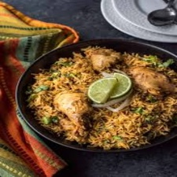
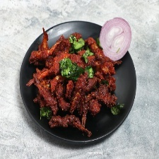
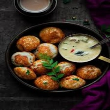
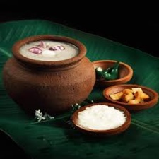

Tamil Nadu, known for its deep-rooted culture and heritage, boasts a cuisine that is as diverse as its landscapes—from the coastal towns to the lush interiors. This festival brings together the very essence of Tamil food, offering an unforgettable gastronomic journey that highlights the bold flavors, aromatic spices, and time-honored cooking techniques passed down through generations. At the heart of Tamil cuisine lies a beautiful balance of taste and nutrition. Guests can indulge in iconic dishes like idli, dosai, pongal, vadai, and sambar, as well as more complex regional specialties such as Chettinad pepper chicken, Kongunadu mutton curry, Madurai kari dosa, and coastal fish curries. Vegetarian delights made from lentils, rice, coconut, and spices are served alongside hearty non-vegetarian fare, showcasing the variety and richness of the cuisine. The festival also features an array of traditional sweets like payasam, adhirasam, and jangiri, along with savory snacks such as murukku, thattai, and sundal. Each dish is a reflection of the state’s cultural diversity and its people’s deep connection to food. In addition to mouthwatering dishes, the event brings Tamil Nadu’s cultural vibrancy to life through traditional music performances, folk dances, and decor inspired by temple art and village festivals. Whether you're a food enthusiast or someone seeking to explore South Indian heritage, the Taste of Tamil Nadu Food Festival promises a sensory experience filled with flavor, tradition, and heartfelt hospitality. Join us in celebrating the timeless tastes of Tamil Nadu—where every bite tells a story, every recipe holds a legacy, and every meal is a celebration of life.
1.Banana Leaf serving - adds aroma and eco-vibe.
2.Appalam & pickels - crunchy + spicy extras.
3. Filter Coffee - the unoffical end to every TN meal.
As part of the *Taste of Tamil Nadu* Food Festival, we have thoughtfully compiled a selection of iconic dishes that reflect the rich culinary heritage of the region. Each dish has been described in detail to highlight its unique preparation methods, use of traditional ingredients, and cultural significance. This curated list offers a deeper understanding of how Tamil cuisine varies across different regions—ranging from hearty rural recipes to refined festive fare. The descriptions aim to showcase the balance of flavors, the importance of fresh spices, and the time-honored cooking techniques that define Tamil Nadu’s food traditions. Whether it’s a simple everyday meal or an elaborate dish reserved for special occasions, each item in the collection carries with it a story of tradition, community, and identity. Through this detailed presentation, we invite guests to not only enjoy the tastes but also connect with the heritage and soul of Tamil cooking.
| S.no | Image | Dish | Region | Description |
|---|---|---|---|---|
| 1. |  | Chettinad Chicken curry | Chettinad(Karaikudi) | A bold spicy chicken curry ifused with black pepper, drynred chilles, and aromatic roasted spices from rhr Chettinad region |
| 2. |  |
Kothu parotta | Madurai | Shredded flaky parotta tossed on a hot iron griddle with egg, meat, onions and a flavorful masala-spicy, crispy and icoic |
| 3. |  |
Kari Dosa | Madurai | A tick, soft dosa topped with spicy minced meat (usually mutton or chicken) and layered with egg - a Madurai speciality. |
| 4. |  | Nethili Meen Varuval | Coastal TN | Anchovies marinated in a fiery masala and shallow-fried to perfection. Crispy, spicy and a coastal favorite. |
| 5. |  | Kuzhi Paniyaram | Kongu Nadu | Fremented rice batter balls cokked in a special mold, crisp outside and soft inside. Can be spicy or sweeet! |
| 6. |  |
Ambur Biriyani | North Arcot | A flavorful biriyani mad ewith seeraga samba rice and a mild blend of spices, often paired with brinjal curry or raita. |
| 7. |  | Kambu Koozh | Rural TN | A traditional cooling drink made fdrom fermented pearl millet, served with raw onion and green chili-nutritious and refreshing. |
| 8. |  |
Thalappakatti Mutton Biriyani | Dindigul | A signature biriyani from dindigul made using seeraga samba rice, tender mutton, and a secret blend of hand-ground spices.
Unlike Ambur biriyani, this one is more peppery and rich-love for its deep, earthy flavors. |